import numpy as np
np.set_printoptions(precision=3, suppress=True)Biblioteka Qiskit wprowadzenie
python3 -m venv venv
source venv/bin/activate
# Scripts\Activate
pip install qiskit==1.2.1
pip install qiskit[visualization]
# pip install 'qiskit[visualization]'
pip install qiskit_aer==0.15.1
pip install qiskit-algorithms==0.3.0
pip install qiskit_machine_learning==0.7.2
pip install qiskit-finance==0.4.1
pip install qiskit-ibm-runtime==0.29.0
pip install qiskit-optimization==0.6.1The other important libs.
pip install pylatexenc ipywidgets qutip
pip install scikit-learn numpy scipy matplotlib
pip install ipython pandas sympy nose seaborn jupyter notebook jupyterlabQiskit podstawy
Tworzenie rejestrów:
- kwantowego
QuantumRegister- do inicjalizowania kubitów. Kubity domyślnie inicjalizowane są w stanie \(|0\rangle\) - klasycznego
ClassicalRegisterdo przechowywania wyników pomiarów kubitów. Po pomiarze otrzymywany wynik zawsze jest binarny \(\{0,1\}\).
from qiskit import QuantumRegister, ClassicalRegister, QuantumCircuitOba rejestry wykorzystywane będą do generowania obwodów kwantowych QuantumCircuit.
Wszystkie podstawowe obiekty dostępne są bezpośrednio w bibliotece qiskit.
qreq = QuantumRegister(4) # rejest kwantowy z 4 qubitamicreg = ClassicalRegister(4) # rejestr klasyczny z 4 bitamicircuit = QuantumCircuit(qreq, creg) # obwód kwantowy z 4 qubitami i 4 bitamicircuit.draw('mpl') # funkcja rysująca obwód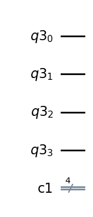
output = QuantumRegister(1) # inny rejestr kwantowy z 1 qubitemcircuit2 = QuantumCircuit(qreq, output, creg)circuit2.draw("mpl")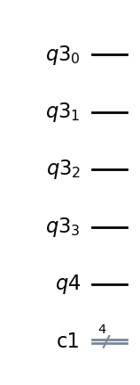
circuit3 = QuantumCircuit(qreq)circuit3.draw('mpl')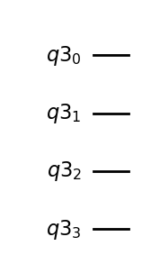
circuit4 = QuantumCircuit(3,3)
circuit4.draw("mpl")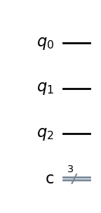
from qiskit_aer.primitives import Sampler
from qiskit import QuantumCircuit
from qiskit.visualization import plot_histogram
bell = QuantumCircuit(2)
bell.h(0)
bell.measure_all()
# execute the quantum circuit
quasi_dists = Sampler().run(bell, shots=1000).result().quasi_dists[0]
print(quasi_dists){1: 0.503, 0: 0.497}plot_histogram(quasi_dists)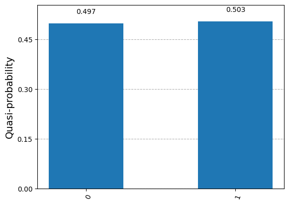
Pomiar w obwodzie i wielokrotne uruchamianie układu
Tworzenie stanu jednokubitowego
\[ \ket{\psi}=\ket{0} \]
Do inspekcji stanu układu (bez jego pomiaru) mozemy uzyć backend statevector_simulator.
from math import pi
from qiskit import QuantumCircuit
from qiskit.quantum_info import Statevector
# Create a Bell state for demonstration
qc = QuantumCircuit(1)
psi = Statevector(qc)psi.draw('latex') # metoda wypisująca wektor stanu w latexu\[ |0\rangle\]
from qiskit.visualization import plot_bloch_multivector
plot_bloch_multivector(psi)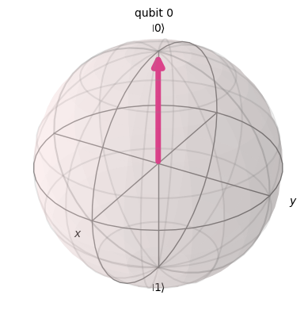
qc = QuantumCircuit(1)
qc.h(0)
state = Statevector(qc)
state.draw('latex')\[\frac{\sqrt{2}}{2} |0\rangle+\frac{\sqrt{2}}{2} |1\rangle\]
plot_bloch_multivector(state)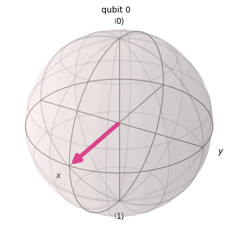
inicjalizacja stanu
from qiskit import QuantumCircuit
qc = QuantumCircuit(1)
initial_state = [0,1]
qc.initialize(initial_state, 0)
qc.draw('mpl')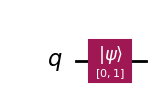
state = Statevector(qc)
state.draw('latex')\[ |1\rangle\]
initial_state = [1,1]
qc = QuantumCircuit(1)
qc.initialize(initial_state, 0)
result.draw('latex')--------------------------------------------------------------------------- QiskitError Traceback (most recent call last) Cell In[43], line 3 1 initial_state = [1,1] 2 qc = QuantumCircuit(1) ----> 3 qc.initialize(initial_state, 0) 4 result.draw('latex') File ~/Documents/Dokumenty – MacBook Air (Sebastian)/qml2024/venv/lib/python3.12/site-packages/qiskit/circuit/quantumcircuit.py:5866, in QuantumCircuit.initialize(self, params, qubits, normalize) 5862 qubits = [qubits] 5864 num_qubits = len(qubits) if isinstance(params, int) else None -> 5866 return self.append(Initialize(params, num_qubits, normalize), qubits, copy=False) File ~/Documents/Dokumenty – MacBook Air (Sebastian)/qml2024/venv/lib/python3.12/site-packages/qiskit/circuit/library/data_preparation/initializer.py:75, in Initialize.__init__(self, params, num_qubits, normalize) 50 def __init__( 51 self, 52 params: Statevector | Sequence[complex] | str | int, 53 num_qubits: int | None = None, 54 normalize: bool = False, 55 ) -> None: 56 r""" 57 Args: 58 params: The state to initialize to, can be either of the following. (...) 73 normalize: Whether to normalize an input array to a unit vector. 74 """ ---> 75 self._stateprep = StatePreparation(params, num_qubits, normalize=normalize) 77 super().__init__("initialize", self._stateprep.num_qubits, 0, self._stateprep.params) File ~/Documents/Dokumenty – MacBook Air (Sebastian)/qml2024/venv/lib/python3.12/site-packages/qiskit/circuit/library/data_preparation/state_preparation.py:109, in StatePreparation.__init__(self, params, num_qubits, inverse, label, normalize) 107 params = np.array(params, dtype=np.complex128) / norm 108 elif not math.isclose(norm, 1.0, abs_tol=_EPS): --> 109 raise QiskitError(f"Sum of amplitudes-squared is not 1, but {norm}.") 111 num_qubits = self._get_num_qubits(num_qubits, params) 112 params = [params] if isinstance(params, int) else params QiskitError: 'Sum of amplitudes-squared is not 1, but 1.4142135623730951.'
from math import sqrt
initial_state = [1/sqrt(2),1/sqrt(2)]
qc = QuantumCircuit(1)
qc.initialize(initial_state, 0)
result = Statevector(qc)
result.draw('latex')\[\frac{\sqrt{2}}{2} |0\rangle+\frac{\sqrt{2}}{2} |1\rangle\]
from math import sqrt
initial_state = [1/2,sqrt(3)/2]
qc = QuantumCircuit(1)
qc.initialize(initial_state, 0)
result = Statevector(qc)
result.draw('latex')\[\frac{1}{2} |0\rangle+\frac{\sqrt{3}}{2} |1\rangle\]
from math import pi, cos, sin
def get_state(theta):
return [cos(theta/2), sin(theta/2)]
theta = -pi/2
qc = QuantumCircuit(1)
qc.initialize(get_state(theta), 0)
result = Statevector(qc)
result.draw('latex')\[\frac{\sqrt{2}}{2} |0\rangle- \frac{\sqrt{2}}{2} |1\rangle\]
# execute the quantum circuit
qc.measure_all()
quasi_dists = Sampler().run(qc, shots=1000).result().quasi_dists[0]
print(quasi_dists){0: 0.523, 1: 0.477}plot_histogram(quasi_dists)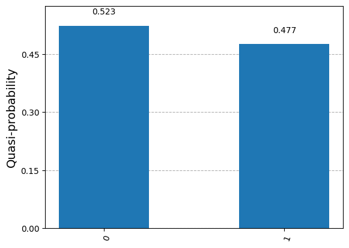
Tworzenie stanu dwukubitowego
\[ \ket{00}, \ket{01}, \ket{10}, \ket{11} \]
qc = QuantumCircuit(2)
result = Statevector(qc)
result.draw('latex')\[ |00\rangle\]
qc = QuantumCircuit(2)
qc.h(0)
qc.h(1)
result = Statevector(qc)
result.draw('latex')\[\frac{1}{2} |00\rangle+\frac{1}{2} |01\rangle+\frac{1}{2} |10\rangle+\frac{1}{2} |11\rangle\]
plot_bloch_multivector(result)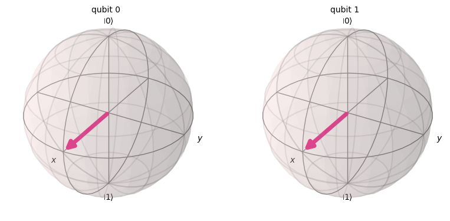
qc = QuantumCircuit(2)
qc.h(0)
qc.cx(0,1)
result = Statevector(qc)
result.draw('latex')\[\frac{\sqrt{2}}{2} |00\rangle+\frac{\sqrt{2}}{2} |11\rangle\]
plot_bloch_multivector(result)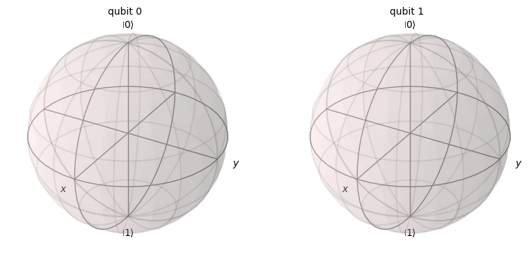
Tworzenie stanu trzy-kubitowego
\[ \ket{000}, \ket{001}, \ket{010}, \ket{011}, \ket{100}, \ket{101}, \ket{110}, \ket{111}\]
qc = QuantumCircuit(3)
qc.x(0) # uwaga 0 wy kubit jest oznaczony od w stanie od prawej - nie od lewej (jak index)
#qc.x(1)
Statevector(qc).draw('latex')\[ |001\rangle\]
Uruchom powyższy kod usuwajac poszczegolne komentarze i sprawdz wynik.
from qiskit.visualization import circuit_drawer
q = QuantumRegister(1)
c = ClassicalRegister(1)
circuit = QuantumCircuit(q, c)
circuit.h(0)
circuit.measure(q, c)
circuit_drawer(circuit) ┌───┐┌─┐
q7: ┤ H ├┤M├
└───┘└╥┘
c4: 1/══════╩═
0